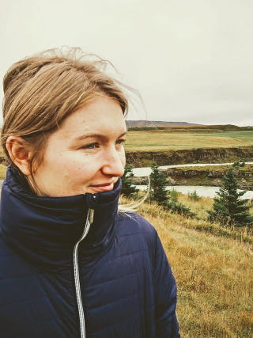

My personal story
Through living and gaining experience in different countries, I found myself experiencing the expat challenges firsthand. When I moved in the Netherlands, I had only one person to rely on: no friends, no acquaintances, no language skills. Soon I realized that I will not fit into the Dutch system of psychology, so I felt lost, discouraged to do anything, even leave the house. My relationship got tense, I had nobody else to vent on, so my husband had to take the full load. It was a difficult year for both of us.
Then, came the day when my husband told me: “I am okay if you want to be a housewife, just let me know your decision, so we could plan ahead”. It shook me, I realized that my stagnation went so far that it is becoming a normal state. I didn’t want that, my head was full of wishes, just my courage was low. Then, with yet another push, I started. I started to go to events, talk with coaches. And what did I find? That nobody talks about the feelings, nobody talks about difficulties, nobody encourages to share inner fears and hurts. I understood that most of these initiatives are lead by Dutch, who really want to help new immigrants but have no idea how they feel, what are they going through. I knew, then, what I should do.
And the action started. I talked with other expats, listened to their stories, understood the variety of challenges. Then, I organized the Expat Women Support Group which was the place to talk about emotions, difficulties, families, their homes. That’s where the “it’s not just about the weather” motto emerged – it was the place to talk about real things, not superficial. Together with the group, started individual sessions and couple counseling, where as expat myself I could empathize, understand, help to move forward. My focus changed, identity evolved, perspective broadened. And here I am today, reaching you and hoping that you will take the step to observe yourself, take the effort to care for yourself and your future.